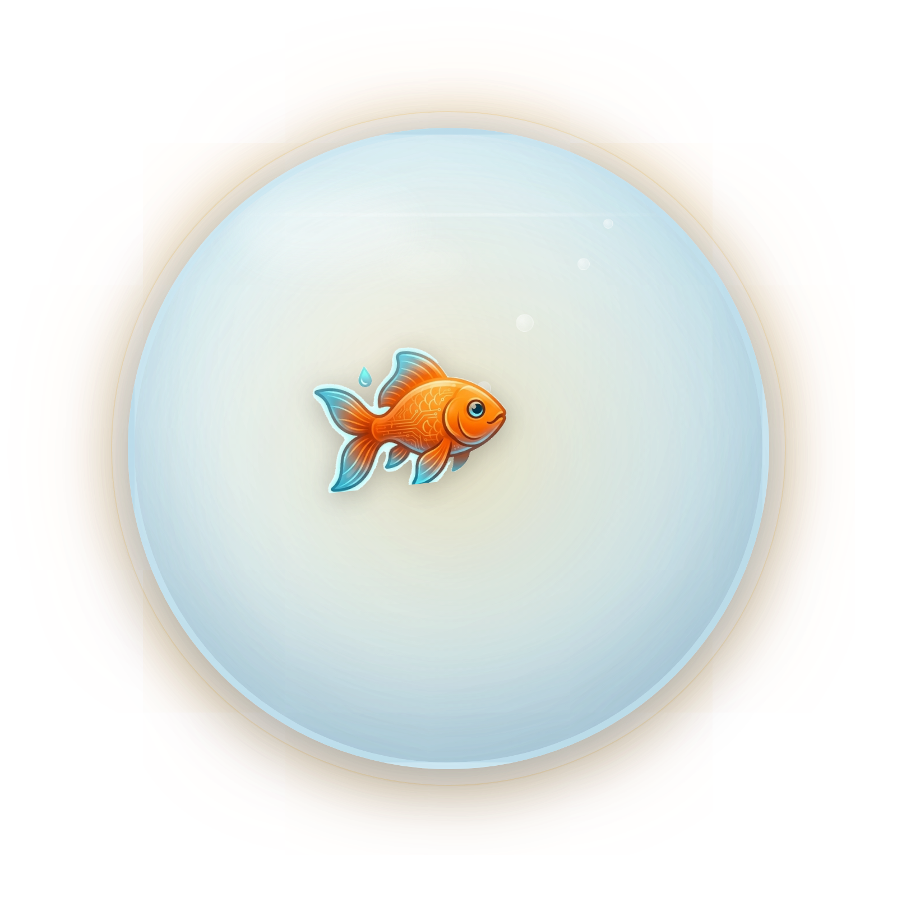
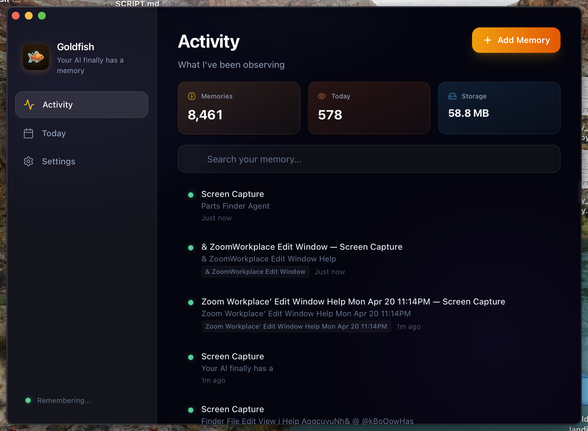

Stop explaining yourself to ChatGPT, Claude, and Cursor. Goldfish quietly remembers everything you work on — your Notion, your Figma, your tabs — and your AI just knows.

It watches. It remembers. Your AI just knows.
It quietly reads every app, doc, tab, and chat you work in. Every few seconds, a fresh memory is saved.
Everything stays on your Mac. No cloud. No accounts. Pause it, wipe it, or open the settings to see every memory.
ChatGPT, Claude, Cursor — they all just know what you were doing. No setup per conversation.
Every app window, every doc, every chat. Tagged, searchable, and totally yours.

Downloads, installs, and unblocks the app automatically. Paste in Terminal.
Prefer clicking around? Grab the .dmg directly.
Then open Goldfish normally. The onboarding connects your AI tools automatically.
No. Everything stays on your Mac. Zero network calls unless you opt in to the optional Gemini enhancer (which requires you to paste your own API key). No accounts, no telemetry, no cloud. The code is public — read it yourself.
It isn't — macOS says that about any app that isn't Apple-signed. Apple charges $99/year for signing; we'll add it once there's real usage. The one-line install above handles the unblock for you.
Claude Desktop, Claude Code, Cursor, Windsurf, and any other tool that speaks MCP (the Model Context Protocol). Onboarding auto-detects the ones you already have installed.
On the roadmap. Star the repo to get notified.
Yes. Pause from the menu bar any time. Wipe the whole memory from Settings → Data. It's your Mac.